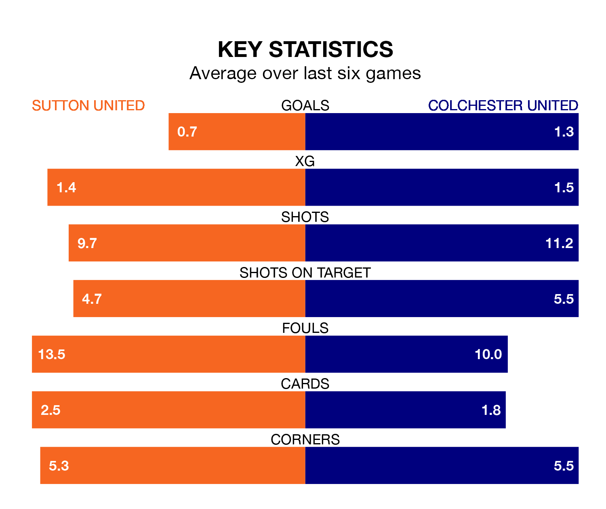

Saturday's match at the VBS Community Stadium sees two relegation candidates play each other, as bottom of the table Sutton United host 21st-placed Colchester United.
Sutton have picked up 22 points from their first 22 EFL League Two games, with four wins and 10 draws.
That is eight points less than the U's have collected, having won eight and drawn six.
Sutton are in terrible form in EFL League Two, with no wins and two draws from their last six games.
With a win and four draws over that period, Colchester's form is better – they have taken seven points from 18, compared to Sutton United's two.
In the last 10 years, Sutton and Colchester have played each other on six occasions. Sutton won four of them, Colchester one, and they drew once.
On average, the Us scored 1.8 goals and the U's 1.5 in those matches.
Their last meeting was on November 11, when they played out a 1-1 draw.
With 35 goals in 33 games so far this season, the Us are the league's third-lowest scorers with 1.1 goals per game. And they are conceding more than average, letting in 63 goals at a rate of 1.9 per game.
Colchester United are also below average scorers, with 1.3 goals per game, compared to a league average of 1.5. They have conceded 1.9 goals per game.
Sutton's last match was on February 17, a 1-0 loss against Bradford City.
Colchester drew 1-1 with Accrington Stanley last time out, also on February 17, with Noah Chilvers on the scoresheet.
Updated: 10:08 (UTC), 23/02/24